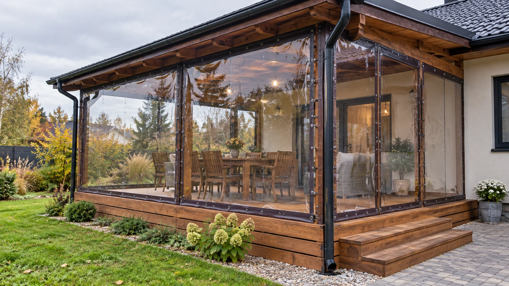

SHIAN · СЕРГИЕВ ПОСАДМягкие окна,
тенты и изделия
из ПВХ
Изготовление по размерам.
Ремонт полотен и фурнитуры.
Смотреть каталог ↓ Для дома, транспорта и производстваИЗГОТОВЛЕНИЕ И РЕМОНТ
Каталог изделий
01Мягкие окна
Закрывают веранду, беседку или летнюю площадку от ветра и осадков, сохраняя обзор.
- Прозрачные полотна с окантовкой
- Дверные проёмы на молнии
- Крепления и ремни для сворачивания
Подробнее об услуге +
Учитываются ширина и высота каждого проёма, материал стоек, расположение входов и сезонность. Мягкие окна защищают от непогоды, но не заменяют тёплые стеклопакеты.
02Автотенты
Тенты для грузовиков и прицепов с доступом к грузу и фиксацией по существующему каркасу.
- Грузовые автомобили и прицепы
- Боковая и задняя загрузка
- Люверсы, ремни и усиления
Подробнее об услуге +
Конструкция зависит от геометрии каркаса и способа погрузки. В расчёте важно отдельно учитывать полотно, фурнитуру, установку и возможный ремонт основания.
03Ремонт тентов
Восстановление повреждённого участка, швов и креплений без замены всего изделия, когда ткань ещё прочная.
- Порезы и разрывы полотна
- Восстановление сварных швов
- Замена люверсов и ремней
Подробнее об услуге +
Сначала оценивают износ материала вокруг повреждения. Заплата не решит проблему, если ткань потеряла прочность по всей площади. Объём ремонта уточняется по изделию.
04Шторы и ПВХ-завесы
Разделение рабочих зон, защита оборудования и проёмов от брызг, пыли и сквозняков.
- Шторы для автомоек и цехов
- Прозрачные вставки
- Сплошные и полосовые решения
Подробнее об услуге +
При выборе учитывают ширину проёма, движение людей и техники, температуру и воздействие среды. Для сварочных постов нужны специальные защитные материалы — обычная прозрачная плёнка не подходит.
05Герметичные ёмкости и чаши
Гибкие резервуары и вкладыши по форме основания для хранения воды и восстановления чаш.
- Вкладыши для бассейнов
- Ёмкости под заданный объём
- Узлы наполнения и слива
Подробнее об услуге +
Нужны размеры основания, рабочий объём, вид жидкости, температура и расположение патрубков. Допуск для питьевой воды и специальных сред подтверждается отдельно для конкретного материала.
06Защитные чехлы и укрытия
Покрытия по форме лодки, оборудования или мебели для перевозки и сезонного хранения.
- Лодки и катера
- Садовая мебель и оборудование
- Крепления по контуру изделия
Подробнее об услуге +
Важно учесть места, где ткань может перетираться, точки фиксации, удобство снятия и необходимость вентиляции. Сложную форму уточняют по шаблону или замерам.
ПОДХОД SHIAN К РАБОТЕ
Почему выбирают нас
✓Изготавливаем под размеры вашего объекта
Учитываем геометрию проёмов, каркаса или чаши. Расположение швов, входов и креплений подбираем под конкретное изделие.
Помогаем разобраться в материалах
Прозрачному окну, автотенту и герметичной ёмкости нужны разные свойства. Обсуждаем нагрузку, контакт с водой и условия использования, затем подбираем полотно.
Сразу обсуждаем полную комплектацию
Уточняем окантовку, молнии, крепления, ремни и усиления. Вы понимаете, что входит в изделие и какие дополнительные элементы нужны для вашего объекта.
Продумываем входы и открывание секций
Для мягких окон подбираем расположение входа и способ фиксации свёрнутых полотен. Для автотентов учитываем доступ к грузу и крепление к каркасу.
Ремонтируем полотна и фурнитуру
Оцениваем состояние существующего изделия. Если материал пригоден для восстановления, ремонтируем повреждённые участки и заменяем изношенные элементы.
Учитываем места повышенной нагрузки
У креплений, углов и рабочих проёмов полотно испытывает разные нагрузки. Подбираем усиления и соединения с учётом назначения изделия.
Работаем с частными и коммерческими заказами
Мягкие окна для беседки, шторы для рабочей зоны, тент для транспорта или чаша по размерам — каждую задачу рассматриваем отдельно.
Есть мастерская, куда можно обратиться
SHIAN находится в Сергиевом Посаде, в Семхозе, на Парковой, 8. Здесь можно обсудить изготовление, комплектацию или ремонт существующего изделия.
Расскажите, какое изделие вам нужно и где оно будет использоваться.
Обсудить заказ ↗ПОСЛЕДОВАТЕЛЬНОСТЬ
Как проходит работа
- 01
Задача и замер
Уточняем, что нужно изготовить или восстановить. Для нового изделия определяем размеры, форму проёмов или каркаса и места крепления.
- 02
Материал и комплектация
Подбираем полотно под назначение изделия. Обсуждаем цвет окантовки, входы, молнии, ремни, крепления и усиления.
- 03
Расчёт заказа
Определяем состав изделия и работ. Изготовление, фурнитуру, доставку и монтаж при необходимости рассматриваем отдельными позициями.
- 04
Изготовление или ремонт
Раскраиваем полотно, выполняем соединения и устанавливаем выбранную фурнитуру. При ремонте работаем с согласованными повреждёнными участками.
- 05
Установка и проверка
При заказе монтажа проверяем расположение креплений, натяжение и работу подвижных элементов. Способ установки зависит от материала основания.
- 06
Передача и уход
Обсуждаем очистку, открывание и сезонное использование изделия. Для мягких окон особенно важны ограничения по сворачиванию при низкой температуре.
НА ЧТО ОБРАТИТЬ ВНИМАНИЕ
Избегайте мастеров,
которые…
Называют окончательную цену только по площади
Проверьте, входят ли окантовка, молнии, крепления, усиления и установка. Одинаковая площадь не означает одинаковую комплектацию.
Изготавливают без проверки размеров и основания
Важно учитывать геометрию, перекосы проёмов и места крепления. Ошибку замера нельзя исправить сильным натяжением полотна.
Предлагают одинаковый материал и крепёж для любой задачи
Условия работы окна, грузового тента и чаши отличаются. Выбор должен учитывать назначение, нагрузки и материал каркаса.
Советуют натянуть мягкое окно как барабан
ПВХ меняет размеры при изменении температуры. Чрезмерное натяжение повышает нагрузку на полотно и крепления.
Не объясняют правила ухода и ограничения
Заранее уточняйте, чем мыть полотно, когда его можно сворачивать и как хранить. Рекомендации должны соответствовать конкретному материалу.
ОБРАЩЕНИЕ В SHIANОбсудим ваш
заказ.
Выберите изделие и опишите, что нужно изготовить или отремонтировать.
Адрес мастерской ↗